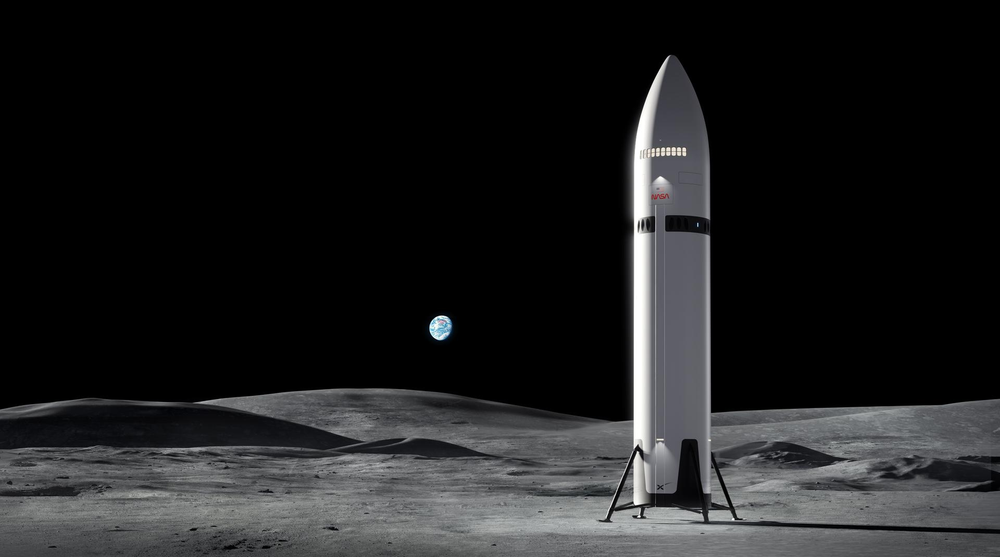
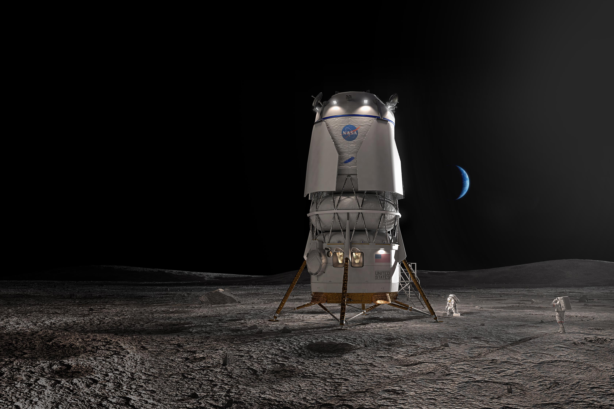

The Landers
Unlike the Apollo program, the Artemis program is using two landers made by commercial companies. Both of them are reusable and will start to be used no earlier than 2027.
SpaceX: Starship HLS (Human Landing System)
SpaceX's lander is called Starship HLS. It is a variant of the Starship spacecraft and is planned to be used starting on Artemis IV. HLS will dock to the Orion spacecraft in Lunar orbit before descending to the lunar surface. Once there, it will be used on the Moon for about a week before transporting the astronauts back up to Orion. Unlike the regular Starship vehicle, the HLS lander will not reenter Earth's atmosphere and will stay in space.

Blue Origin: Blue Moon
Blue Origin's lander is called Blue Moon. It is a lunar lander designed for the Artemis program and is planned to be used starting on Artemis V. Similar to Starship HLS, Blue Moon will dock with the Orion spacecraft in Lunar orbit and descend to the Moon. After a few days, it will return back to the Orion spacecraft.
